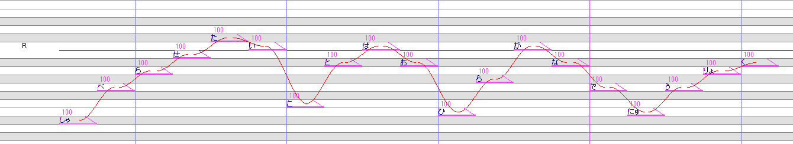
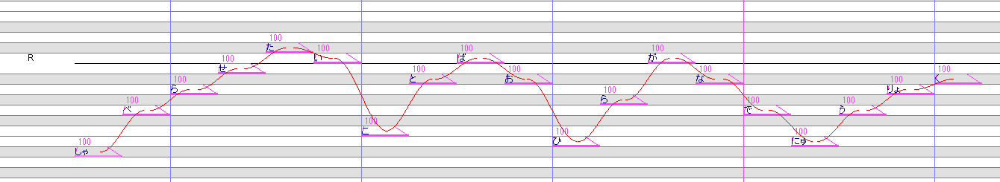

始めに
javascriptを有効にしてください。
動作確認環境
FireFox
Google Chrome
現在研究開発中の音源形式なので、このマニュアルにある手法は今後変更される可能性があります。
各種リンク
HANASU用VCVC音源紹介ページ
OREMO、setParam等を配布されているページ
開発者ツイッター（関係のない情報も複数ツイートします）@niconicoHaruqa
HANASU用VCVC音源情報リツイーター（関係のある情報のみリツイートします）@vcvcHaruqa
OREMO、setParam等を配布されているページ
開発者ツイッター（関係のない情報も複数ツイートします）@niconicoHaruqa
HANASU用VCVC音源情報リツイーター（関係のある情報のみリツイートします）@vcvcHaruqa
更新履歴
2016/09/11 Ver.1.0.0 初版
2016/09/25 Ver.1.1.0 コンテンツ追加、誤字修正
2016/09/25 Ver.1.1.1 誤字修正
2016/09/25 Ver.1.2.0 コンテンツ追加、表現修正
2017/06/27 一時ファイルへ差し替え 一部公開停止中
2017/10/01 - 2018/01/08 Ver.2.0.0 CVtoVCVCwithAI - Ver.1.0.0(メジャーバージョン) HANE1.0へ切り替え 更新完了
2018/12/31 - 2019/01/01 Ver.2.1.0 HANE2.0へ切り替え 更新完了
2019/01/03 Ver.2.1.1 学習で使用するoto.ini・エイリアスの制約について微調整
2016/09/25 Ver.1.1.0 コンテンツ追加、誤字修正
2016/09/25 Ver.1.1.1 誤字修正
2016/09/25 Ver.1.2.0 コンテンツ追加、表現修正
2017/06/27 一時ファイルへ差し替え 一部公開停止中
2017/10/01 - 2018/01/08 Ver.2.0.0 CVtoVCVCwithAI - Ver.1.0.0(メジャーバージョン) HANE1.0へ切り替え 更新完了
2018/12/31 - 2019/01/01 Ver.2.1.0 HANE2.0へ切り替え 更新完了
2019/01/03 Ver.2.1.1 学習で使用するoto.ini・エイリアスの制約について微調整
HANASU用VCVC音源とは
Haruqaが研究開発途中の音源方式で、HANASU用音源の解の一つです。
HANASUガチ勢のHANASUガチ勢によるHANASUガチ勢向けの音源となります。
音素の繋ぎ方、エイリアスの選定は専用プラグインによりほぼ実現されますが、一番重要なピッチは調声師に依存します。
HANASUガチ勢のHANASUガチ勢によるHANASUガチ勢向けの音源となります。
音素の繋ぎ方、エイリアスの選定は専用プラグインによりほぼ実現されますが、一番重要なピッチは調声師に依存します。
収録方法
収録はOREMOを使って行います。文の読み上げとなるため、ガイド音声はありません。OREMOの設定、音名リストの読み込み、読み仮名のコメント表示等が自動で行えるため、公開している音源作成支援ツールを経由してOREMOを使用することをお勧めします。
録音リストはHaruqaが開発公開中のもののほか、自分で作成することが出来ます。
また、録音リストや原音設定用のファイルを生成するための支援ツールは音源作成支援ツール(HANASUyoVCVCutility.exe)に組み込まれて公開しています。生成した録音リストは自由に公開できるので、よりよい録音リストを研究していただけると幸いです。
録音リストはHaruqaが開発公開中のもののほか、自分で作成することが出来ます。
録音リスト
Haruqaが作成したものは音源作成支援ツールに同梱されています。また、録音リストや原音設定用のファイルを生成するための支援ツールは音源作成支援ツール(HANASUyoVCVCutility.exe)に組み込まれて公開しています。生成した録音リストは自由に公開できるので、よりよい録音リストを研究していただけると幸いです。
録音リスト作成時の注意事項
一文中に間（句読点等による空白）は入れてはいけません。エイリアス推定プラグインにおける、oto.iniからの学習時に不具合を発生させます。
同様にして、ブレスが必要になるほどの長さの文は避けてください。
同様にして、ブレスが必要になるほどの長さの文は避けてください。
録音リストの公開
HANASU用VCVC音源の録音リストの公開時は「録音リスト」「音名リスト」「oto.ini」を同時に公開することをお勧めします。
録音リスト：音源作成支援ツールで使用される漢字かな混ざり文、ひらがな読み、エイリアスが含まれた専用テキストファイルです。
音名リスト：OREMOにて使用する音名リストです。
oto.ini：setParamで設定する原音設定ファイルです。
録音リスト：音源作成支援ツールで使用される漢字かな混ざり文、ひらがな読み、エイリアスが含まれた専用テキストファイルです。
音名リスト：OREMOにて使用する音名リストです。
oto.ini：setParamで設定する原音設定ファイルです。
音名リストの読み方
音源作成支援ツールの収録機能を用いるとOREMOのコメント部分に読み仮名が表示されます。
そのほか、配布されている音名リストを直接OREMOに読み込むと、音名リストは漢字かな混ざり文であるため、読み方が不明な場合があります。その場合は、配布されているであろう専用テキストファイル「録音リスト」を参照いただくと、判明すると思われます。
「録音リスト」はCVS形式のファイルなので、CVSファイルビュアーを用いると、見やすいと思われます。
そのほか、配布されている音名リストを直接OREMOに読み込むと、音名リストは漢字かな混ざり文であるため、読み方が不明な場合があります。その場合は、配布されているであろう専用テキストファイル「録音リスト」を参照いただくと、判明すると思われます。
「録音リスト」はCVS形式のファイルなので、CVSファイルビュアーを用いると、見やすいと思われます。
録音のポイント
自然な発音で読む（鼻濁音とかは意識しなくて良いです、無声化も自然に）
→発音はそのまま合成結果に反映されます。
自然な発音かどうか分かり辛いときは、自然な速さで読み上げた波形と見比べてみると分かるかもしれません。
自然な発音かどうか分かり辛いときは、自然な速さで読み上げた波形と見比べてみると分かるかもしれません。
ゆっくり読む（BPM100の16分音符くらい）
→ゆっくり読むことで、原音設定の矛盾を予防し原音設定が容易になること、合成時の引き伸ばし劣化の回避、発音の明確化が期待できます。
テンポは一長一短であり、録音者（原音設定を外部に依頼するときは原音設定者にも）に委ねます。
傾向：
テンポが遅い：調整時に素直に発音する⇔無声化パターンが乱れる傾向がある→原音設定である程度吸収することは出来る。
テンポが速い：調整時に発音が濁る⇔無声化パターンが一定、引き伸ばし劣化に弱い→発音の濁りはある程度エイリアス名でカバー出来る。
テンポは一長一短であり、録音者（原音設定を外部に依頼するときは原音設定者にも）に委ねます。
傾向：
テンポが遅い：調整時に素直に発音する⇔無声化パターンが乱れる傾向がある→原音設定である程度吸収することは出来る。
テンポが速い：調整時に発音が濁る⇔無声化パターンが一定、引き伸ばし劣化に弱い→発音の濁りはある程度エイリアス名でカバー出来る。
テンポを安定させること
→テンポが途中で変化すると、前述のように原音設定に矛盾を発生させる原因となります。
間を空けずに読む
→母音と子音間の空白を減らし、より滑らかな合成結果が期待できます。文途中のブレスも厳禁です。無理に母音と子音を詰める必要はありません。
高低アクセント・ピッチ変化（イントネーション）は普通にしゃべるときと同じく、もしくは抑え気味に
→完全に棒読みにしてしまうと、発音に不自然さが現れます。しかし、ピッチの振れ幅が広すぎると声質に差異が生じてしまいます。
声量（抑揚）を安定させること
→強い強弱アクセントは声質を変えてしまうとともに、周波数表破綻の原因となります。不自然にならない程度に安定させてください。
声質を安定させること
→声質に極端な差が有ると、合成時に滑らかに音素を繋ぐことが難しくなります。
音源作成支援ツールを用いた収録方法
音源作成支援ツール初期設定
HANASUyoVCVCutility.exeを起動し、最初の画面でOREMOとsetParamを設定します。それぞれ実行ファイル(exeファイル)をドラッグ＆ドロップで設定してください。

また、それぞれもとの実行ファイルが起動できる状態でない場合(フォルダにexeファイルのみが保存されている状態など)は起動できないためご注意ください。
収録の「VCVCコア録音リスト」ボタンを押すと、OREMOが開きます。上記の録音方法・録音のポイント等を参考に収録してください。
収録した原音は「原音収録・設定」画面の保存先フォルダ以下に保存されます。保存先フォルダは画面を開くと同時に開いた日時を元に自動でフォルダ名が決定されますが、任意に変更できます。
※画像は開発中のものです。
OREMO、setParamそれぞれに初期設定(～-init.tclファイル)が存在すると、それらを読み込みますが、音源作成支援ツールを経由して起動したもので初期設定を保存しても、起動もしくは録音リストを変更した際に消去されるのでご注意ください。また、それぞれもとの実行ファイルが起動できる状態でない場合(フォルダにexeファイルのみが保存されている状態など)は起動できないためご注意ください。
※画像は開発中のものです。
「原音収録・設定」ボタンをクリックすると「原音収録・設定」の別の画面が開きます。使用するVCVCコア録音リストをドラッグ＆ドロップで設定してください。
収録の「VCVCコア録音リスト」ボタンを押すと、OREMOが開きます。上記の録音方法・録音のポイント等を参考に収録してください。
収録した原音は「原音収録・設定」画面の保存先フォルダ以下に保存されます。保存先フォルダは画面を開くと同時に開いた日時を元に自動でフォルダ名が決定されますが、任意に変更できます。
原音設定規則
基本的には先行発声位置が正しければ問題なく使えるはずですが、より性能を上げる、ユーザーが扱いやすくするために、ここに書かれた規則通りに原音設定を行っていただくのが望ましいです。
エイリアス規則
VCVCエイリアス
基本的には、「[前の音素の母音（前の音素が無声化されている場合、前の音素の子音）] [ （半角スペース）][ひらがな][次の音素の子音]」の形をとります。ローマ字と発音の対応は、別ページ「発音表記対応表」を参照してください。
語頭
語頭はひらがな（単独音エイリアス）の前に、通常の連続音エイリアスと同じく「-」（半角ハイフン）と半角スペースを記述します。
語尾
語尾はひらがなの右に「R」（半角英数）を記述します。
促音
促音（「っ」のこと）の前は、ひらがなの後に「Q」（半角英数）を記述します。促音の後は、ひらがなの前に「Q」（半角英数）を記述します。
HANE2.0以降では促音自体の音素を持つよう変更しました。エイリアスは「a Qt」というようになります。前後の音素については変更ありません。
HANE2.0以降では促音自体の音素を持つよう変更しました。エイリアスは「a Qt」というようになります。前後の音素については変更ありません。
無声化
母音が無声化（欠落）している場合、もしくはきわめて母音が短い場合は、ひらがなの後に「C」（半角英数）を記述します。
例1）解説してみた（かいせつしてみた）→「- かi,a いs,i せts,e つCsy,ts しCt,sy てmy,e みt,i たR」
例2）学校（がっこう）→「- がQk,a Qk,aQ こo,o おR」
例3）そうです→「- そo,o おd,o でs,e すCR」
無声化が語尾で発生した場合はCを先に記述します。
※注意：自動生成、出力されたoto.iniの出力では、ひらがな通りのエイリアスとなるため、発音にあわせて修正してください。（たとえば例2は「- がQk,a Qk,aQ こu,o うR」となっています。）
学習で使用するoto.ini・エイリアスの制約
エイリアスに重複はないものとする
エイリアスは原音ごとに、左から順に設定されてるものとする
エイリアスは必ずひらがなもしくはQと半角スペースを含む
エイリアスの接尾辞接頭辞にひらがなを含まない
エイリアスは原音ごとに、左から順に設定されてるものとする
エイリアスは必ずひらがなもしくはQと半角スペースを含む
エイリアスの接尾辞接頭辞にひらがなを含まない
原音設定の準備
原音設定はsetParamを用いることを推奨します。推奨setParam設定
テンポを固定していない場合はオートフォーカスをはずしたほうが見やすいです。
オートフォーカスするほうが慣れているという場合はオートフォーカスをつけたままでも大丈夫です。
相対的な位置関係の少なくとも一方にチェックを入れてください。
下記「初期値」を保つことが出来ます。
オートフォーカスするほうが慣れているという場合はオートフォーカスをつけたままでも大丈夫です。
相対的な位置関係の少なくとも一方にチェックを入れてください。
下記「初期値」を保つことが出来ます。
基本形
左ブランク
語頭の場合で子音が長い場合は子音の始まり部分に置く。
語頭の場合で子音が短い場合は初期値のまま。
語頭の場合で母音の場合は短くする。
語中で初期値のままだと左の子音が入る場合は左の子音が入らないように置く。
語頭の場合で子音が短い場合は初期値のまま。
語頭の場合で母音の場合は短くする。
語中で初期値のままだと左の子音が入る場合は左の子音が入らないように置く。
オーバーラップ
子音が長い場合は子音のスペクトルがはっきりする位置、もしくは中央に置き左ブランク⇔オーバーラップ間に十分な長さをとるように置く。
子音が短い場合もしくは、語頭で母音の場合は、左ブランク⇔オーバーラップ間が短めになるよう置く。
それ以外の場合は初期値のまま。
子音が短い場合もしくは、語頭で母音の場合は、左ブランク⇔オーバーラップ間が短めになるよう置く。
それ以外の場合は初期値のまま。
先行発声
子音と母音の間もしくは母音と母音の間に置く。
語頭で母音の場合は、母音のスペクトルがはっきりする位置に置く。
語頭で母音の場合は、母音のスペクトルがはっきりする位置に置く。
子音部
子音部⇔右ブランク間が十分広い場合は初期値のまま。
子音部⇔右ブランク間が短い場合は母音のスペクトルが安定する位置に置く。
子音部⇔右ブランク間が短い場合は母音のスペクトルが安定する位置に置く。
右ブランク
次の子音の直前に置く。ただし、s,sy,h,hy,f系の場合右ブランクは左寄りに置く。
語尾の場合は右の無音を多めに含むように置く。ただし収録ノイズがある場合はそれ含めないように置く。
語尾の場合は右の無音を多めに含むように置く。ただし収録ノイズがある場合はそれ含めないように置く。
※「初期値」は出力された原音設定用のoto.iniの初期値のことです。

例：語頭(子音が短い場合)

例：語頭(子音が短い場合、母音)

例：語中(右の子音がs,sy,h,hy,f系の場合右ブランクは左寄り)

例：語中(右の子音の発音前に無音が入る系)

例：語中(右の子音の発音前に無音が入らない系)

例：語尾

例：促音前(促音部分が無音の場合、右ブランクは促音部分を越えて次の子音の直前)

例：促音(促音部分が無音の場合、先行発声は前の母音が消える位置、右ブランクは促音部分を越えて次の子音の直前)

例：促音後(促音部分が無音の場合)

例：促音前後(促音部分が子音の場合、オーバーラップは子音の中央、右ブランクは左寄り)

例：促音(促音部分が子音の場合、先行発声が前の母音と子音の境目、右ブランクは次の母音の直前)

例外形
エイリアスの書き換えに注意してください。無声化（母音欠落） s,sy,h,hy,f系
左ブランクを子音の始まりに置き、他は初期値。

右が母音で母音が同じ場合は右ブランクを伸ばしてもよい。

母音がない場合の例

上記の次の音素の例

右が母音で母音が同じ場合は右ブランクを伸ばしてもよい。
母音がない場合の例
上記の次の音素の例
無声化（母音欠落） t,cy,ts,k,ky系
オーバーラップを左ブランク⇔オーバーラップ間が短めになるよう置く。
先行発声は音のフェードアウトが始まる位置に置く。
右ブランクは次の子音の直前に置く。
他は初期値。


右の子音が続いている例(子音の引き伸ばしに寄るノイズ化を避けるため右ブランクを右にずらしている)

先行発声は音のフェードアウトが始まる位置に置く。
右ブランクは次の子音の直前に置く。
他は初期値。
右の子音が続いている例(子音の引き伸ばしに寄るノイズ化を避けるため右ブランクを右にずらしている)
発音表記対応表
い段にyを含む以外は一般的な対応であると思われます。
| あ | a | た | ta | ま | ma | が | ga | ば | ba | ヴぁ | va | |||||
| い | i | ち | cyi | み | myi | ぎ | gyi | び | byi | ヴぃ | vyi | |||||
| う | u | つ | tsu | む | mu | ぐ | gu | ぶ | bu | ヴ | vu | |||||
| え | e | て | te | め | me | げ | ge | べ | be | ヴぇ | ve | |||||
| お | o | と | to | も | mo | ご | go | ぼ | bo | ヴぉ | vo | |||||
| か | ka | ちゃ | cya | みゃ | mya | ぎゃ | gya | びゃ | bya | |||||||
| き | kyi | ちゅ | cyu | みゅ | myu | ぎゅ | gyu | びゅ | byu | |||||||
| く | ku | ちぇ | cye | みぇ | mye | ぎぇ | gye | びぇ | bye | |||||||
| け | ke | ちょ | cyo | みょ | myo | ぎょ | gyo | びょ | byo | |||||||
| こ | ko | てぃ | tyi | や | ya | ざ | za | ぱ | pa | |||||||
| きゃ | kya | とぅ | tu | ゆ | yu | じ | ji | ぴ | pyi | |||||||
| きゅ | kyu | な | na | よ | yo | ず | zu | ぷ | pu | |||||||
| きぇ | kye | に | nyi | ら | ra | ぜ | ze | ぺ | pe | |||||||
| きょ | kyo | ぬ | nu | り | ryi | ぞ | zo | ぽ | po | |||||||
| さ | sa | ね | ne | る | ru | じゃ | ja | ぴゃ | pya | |||||||
| し | syi | の | no | れ | re | じゅ | ju | ぴゅ | pyu | |||||||
| す | su | にゃ | nya | ろ | ro | じぇ | je | ぴぇ | pye | |||||||
| せ | se | にゅ | nyu | りゃ | rya | じょ | jo | ぴょ | pyo | |||||||
| そ | so | にぇ | nye | りゅ | ryu | だ | da | ふぁ | fa | |||||||
| しゃ | sya | にょ | nyo | りぇ | rye | で | de | ふぃ | fi | |||||||
| しゅ | syu | は | ha | りょ | ryo | ど | do | ふぇ | fe | |||||||
| しぇ | sye | ひ | hyi | わ | wa | でぃ | dyi | ふぉ | fo | |||||||
| しょ | syo | ふ | fu | を | wo | どぅ | du | |||||||||
| へ | he | ん | nn | |||||||||||||
| ほ | ho | |||||||||||||||
| ひゃ | hya | |||||||||||||||
| ひゅ | hyu | |||||||||||||||
| ひぇ | hye | |||||||||||||||
| ひょ | hyo |
音源セットアップ
音源のセットアップはエイリアス推定プラグイン(CVtoVCVCwithAI)1.0.0以降(HANE1.0以降)に対応させる場合、音源作成支援ツール(HANASUyoVCVCutility.exe)の使用が必須です。
※画像は開発中のものです。
セットアップ
「セットアップ」ボタンをクリックすると、「セットアップ・音源情報編集」の画面が開きます。
それぞれ入力を行ってください。「*」がついている項目は必須入力です。それぞれカーソルを上に載せて待つと説明の吹き出しが表示されるものがあります。参考にしてみてください。
音源フォルダ、特殊音素の使い方部分はドラッグ＆ドロップで設定できます。
入力例は以下
すべて入力し、間違いが無いことを確認したら、「実行」ボタンを押してください。しばらく待つと以下の完了メッセージが出力されます。
セットアップされた音源をUTAUに読み込み、動作を確認してください。上の入力例の音源を読み込みプラグインで「音源情報」を表示させると以下のようになります。
それぞれ入力を行ってください。「*」がついている項目は必須入力です。それぞれカーソルを上に載せて待つと説明の吹き出しが表示されるものがあります。参考にしてみてください。
音源フォルダ、特殊音素の使い方部分はドラッグ＆ドロップで設定できます。
入力例は以下
すべて入力し、間違いが無いことを確認したら、「実行」ボタンを押してください。しばらく待つと以下の完了メッセージが出力されます。
セットアップされた音源をUTAUに読み込み、動作を確認してください。上の入力例の音源を読み込みプラグインで「音源情報」を表示させると以下のようになります。
Advance
学習記録ファイルの調整
配布前にプラグインのustから学習等、追加学習を行った結果を配布する音源に適応させたい場合は、プラグインに設定されている「学習記録ファイル」
をコピーし、ファイル名を「learningRecord.ini」に書き換え、音源の「HANE」フォルダ以下にある、「learningRecord.ini」へ上書き保存してください。
をコピーし、ファイル名を「learningRecord.ini」に書き換え、音源の「HANE」フォルダ以下にある、「learningRecord.ini」へ上書き保存してください。
音源使用方法
HANASU用VCVC音源はCVtoVCVCwithAIというエイリアス推定プラグインを使用することを前提としています。HANASU用VCVC音源紹介ページからダウンロードできます。

エイリアス推定後

※入力は音源提供者の任意なので、簡易利用規約に記載がない場合もあります。
※画像は開発中のものです。
エイリアス推定
単独音エイリアス（接頭辞接尾辞が無いひらがな）でしゃべらせたいノートを並べ、そのノートを選択し、CVtoVCVCwithAIを立ち上げ、推定実行 ボタンをクリックすると、単独音エイリアスからVCVCエイリアスへ推定、変換が行われます。既存の単独音→連続音変換器のように使えると思われます。長音「－」のノートの置き方
HANASU用VCVC音源は原音が非常に短いため、長音を調声する場合は、一つのノートを伸ばすのではなく、母音ノートを新たに置くことを推奨します。また、長音を含む原音のパターンが当てはまると、より良い推定結果となることが予測されます。
促音「っ」のノートの置き方
そのまま「っ」で置いてください。プラグイン実行後に「Q」に置き換えられます。
曖昧検索する
曖昧検索する にチェックを入れると、完全一致検索以外に、部分検索することが可能になります。通常チェックを入れっぱなしで大丈夫です。
チェックをはずして使用すると、学習したことがある並びと完全一致(CVCVCV)するものの検索のみが行えます。
チェックをはずして使用すると、学習したことがある並びと完全一致(CVCVCV)するものの検索のみが行えます。
使用例
エイリアス推定前
エイリアス推定後
学習
oto.iniから学習
音源製作者サイド向けの機能です。通常使用されませんが、原音を追加した際に上の 学習元oto.iniファイル のテキストボックスにファイルをドラッグ＆ドロップで指定し、 oto.iniから学習 ボタンをクリックすることでoto.iniファイルからの学習を学習記録ファイルに追記することが出来ます。
※追加するエイリアス・oto.iniは、原音設定規則のoto.iniの制約に準じている必要があります。
※追加するエイリアス・oto.iniは、原音設定規則のoto.iniの制約に準じている必要があります。
読み込みustから学習
エイリアス推定後の調声でエイリアスの書き換えを行った場合、書き換えたノートを選択してCVtoVCVCwithAIを起動、 読み込みustから学習 ボタンをクリックすることで、学習記録ファイルに書き換えたエイリアスを追記することが出来ます。
この学習を行うと、次のエイリアス推定時に書き換えを行ったエイリアスを優先して選択させることが出来ます。
この学習を行うと、次のエイリアス推定時に書き換えを行ったエイリアスを優先して選択させることが出来ます。
音源情報
音源情報を確認 ボタンから、音源の情報を確認することが出来ます。※入力は音源提供者の任意なので、簡易利用規約に記載がない場合もあります。
※画像は開発中のものです。
Advance
CVtoVCVCwithAI以外のツールもまとめて使用する、開発者が提案するHANASU調声の環境。
単独音・れんたん・連続音・HANASU用VCVCに対応します。
(2017/11/21現在)
・CVtoVCVCwithAI
・VCVCAliasSelector
・GachiHana
・UWSCWrapper + 専用スクリプト
・HANASUボイス集から読み込み
・語尾を上げる
・VCVtoCV(未公開)
・歌詞を連続音にする by 564 さま
・連続音を単独音化(STP等削除) by 遊牧家族 さま
単独音・れんたん・連続音・HANASU用VCVCに対応します。
(2017/11/21現在)
※画像は開発中のものです。
UWSCWrapper + 専用スクリプトで使用できるようになるショートカット
※画像は開発中のものです。
必須環境
HANASU用VCVCのみ対応するためには以下のプラグインがインストールが必須です。・CVtoVCVCwithAI
・VCVCAliasSelector
・GachiHana
・UWSCWrapper + 専用スクリプト
使用方法
1. UWSCWrapperを立ち上げ、専用スクリプトを読み込ませて起動ボタンを押す。
2. キーボードの「1」を押す。推奨エディタ設定になります。
3. HANASUさせたい言葉をひらがなノートで抑揚（音程）をつけて配置し選択状態にする。
4. キーボードの「F2」を押す。GachiHana(ノートの長さとかいろいろをうにゃうにゃするやつ)実行後エイリアスが変換され、クロスフェードがかかります。
半自動調声完了(試聴して微調整すれば調声完了！)
5. ustを保存したい場合は保存したい場合はキーボードの「4」、wavを保存したい場合はキーボードの「5」を押す。
以降は3,4,5のループ
ext. エイリアスを学習させたい場合はキーボードの「F3」を押す。次のVCVCエイリアス候補を選択させたい場合はキーボードの「F4」を押す。
2. キーボードの「1」を押す。推奨エディタ設定になります。
3. HANASUさせたい言葉をひらがなノートで抑揚（音程）をつけて配置し選択状態にする。
4. キーボードの「F2」を押す。GachiHana(ノートの長さとかいろいろをうにゃうにゃするやつ)実行後エイリアスが変換され、クロスフェードがかかります。
半自動調声完了(試聴して微調整すれば調声完了！)
5. ustを保存したい場合は保存したい場合はキーボードの「4」、wavを保存したい場合はキーボードの「5」を押す。
以降は3,4,5のループ
ext. エイリアスを学習させたい場合はキーボードの「F3」を押す。次のVCVCエイリアス候補を選択させたい場合はキーボードの「F4」を押す。
推奨環境
単独音・れんたん・連続音対応、HANASUボイス集の機能などのUWSCWrapper + 専用スクリプトのショートカットをすべて使用する為には以下のプラグインの追加インストールが必要です。・HANASUボイス集から読み込み
・語尾を上げる
・VCVtoCV(未公開)
・歌詞を連続音にする by 564 さま
・連続音を単独音化(STP等削除) by 遊牧家族 さま
使用方法
単独音・れんたん・連続音の場合上記「4. キーボードの「F2」を押す。」が「4. キーボードの「2」を押す。」に置き換わります。
そのほか、キーボードの「F1」を押すとショートカット一覧が表示されます。
ext. ショートカットのキーは使用するスクリプトファイルの記述を書き換えることで変えることができます。また、スクリプトファイルに新しい処理を記述することで新しいショートカットを追加することも出来ます。記述の方法は「UWSC」で検索してみてください。
そのほか、キーボードの「F1」を押すとショートカット一覧が表示されます。
ext. ショートカットのキーは使用するスクリプトファイルの記述を書き換えることで変えることができます。また、スクリプトファイルに新しい処理を記述することで新しいショートカットを追加することも出来ます。記述の方法は「UWSC」で検索してみてください。
参考動画等
コメントとかコメントとかコメントとかお待ちしております。
メジャーバージョンデモ@ニコニコ動画
プラグインがメジャーバージョン（HANE1.0）になったときのデモ動画です。
【HaruqaVCVC2.0soft】HANASU用VCVC音源デモと音源配布【HANE1.0】
【HaruqaVCVC2.0soft】HANASU用VCVC音源デモと音源配布【HANE1.0】
デモ@ニコニコ動画
一番最初のデモ動画です。HANE1.0以降とは原音設定規則が少々異なります。
【ニコニコ動画】【UTAU】HANASU用VCVC音源デモ【VCVC？】
【ニコニコ動画】【UTAU】HANASU用VCVC音源デモ【VCVC？】
導入使い方@ニコニコ動画
0.9.9beta0以前のものです。0.9.9beta0以降は、学習記録ファイルの設定が自動化されています。
【ニコニコ動画】【HANASU用VCVC音源】導入と使い方【UTAU】
【ニコニコ動画】【HANASU用VCVC音源】導入と使い方【UTAU】
歌に使った例（推奨はされない）@ニコニコ動画
2:12～「足りないもの～」のパートにHANASU用VCVC音源が使用されています。
【ニコニコ動画】【南極リョク】ゴーストルール【UTAUカバー】
ust@twitter
【ニコニコ動画】【南極リョク】ゴーストルール【UTAUカバー】
ust@twitter
HANASU用VCVC音源はこの辺。
— Haruqa (@niconicoHaruqa) 2016年10月26日
南極リョクさんのは比較的ゆっくりなテンポの音源だから、発音の濁りはあまり目立たなかったね。とりあえず伸ばしすぎ注意。
（歌調声推奨しないといいつつ使ってくスタイル･･･。） pic.twitter.com/vC3cib6Beh
連続音とHANASU用VCVC音源の比較画像@twitter
連続音とHANASU用VCVC音源の違いをペッっと画像化するとこんな感じ、どっちもP0フラグ付いてる。VCV→VCVC説明無し→VCVC説明付き pic.twitter.com/RZWfbNDVV0
— Haruqa (@niconicoHaruqa) 2016年10月4日
調整時間比較@twitter
（たぶん）お分かりいただけない･･･。 pic.twitter.com/2BrCPnk87H
— Haruqa (@niconicoHaruqa) 2016年10月6日
多音階（表情音源）テスト@twitter
HANASU用VCVC音源多音階（表情音源）テスト
— Haruqa (@niconicoHaruqa) 2016年10月9日
三つ突っ込んでみた。
切り替えはPrefixMap、他音階の音源を混ぜての学習は出来るけどお勧めはしない。制約が多い＆取り扱いが複雑なので、実用は難しいかな。別音源として作ったほうが分かりやすいし、楽。 pic.twitter.com/N3oz0VJqia
開発マイルストーン・仕様詳細(ほぼ開発者メモ)
※実際の成果物とは異なる場合があります
※実際の成果物とは異なる場合があります
開発コード:HANE2.0
HANEが一枚生えた程度の違い
HANEが一枚生えた程度の違い
CVtoVCVCwithAI - Ver.1.1.0（エイリアス推定プラグイン） 2019/01/01公開
前提：音源フォルダ構成規則・ファイル命名規則の追加
UTAU\voice\音源名\HANE以下に下記のファイル
・初期状態の学習記録ファイル（initialLearningRecord.ini）
・【必須】配布前の学習が含まれる学習記録ファイル（learningRecord.ini）
・学習記録ファイルの作成に使用した区分けフォルダ別のoto.ini（[音源フォルダ内の区分けフォルダ名]oto.ini）
・区分けフォルダ別のoto.iniがマージされたファイル（学習用oto.ini）
・【必須】音源スペック・簡易署名・特殊音素説明（html,txt,pdf等）などが保存される技術情報ファイル（technicalInfo.bin）
・【必須】技術情報ファイルの電子署名ファイル（technicalInfo.key）
・【optional】上記「技術情報ファイル」特殊音素説明で定義されたhtml,txt,pdf等のファイル
・初期状態の学習記録ファイル（initialLearningRecord.ini）
・【必須】配布前の学習が含まれる学習記録ファイル（learningRecord.ini）
・学習記録ファイルの作成に使用した区分けフォルダ別のoto.ini（[音源フォルダ内の区分けフォルダ名]oto.ini）
・区分けフォルダ別のoto.iniがマージされたファイル（学習用oto.ini）
・【必須】音源スペック・簡易署名・特殊音素説明（html,txt,pdf等）などが保存される技術情報ファイル（technicalInfo.bin）
・【必須】技術情報ファイルの電子署名ファイル（technicalInfo.key）
・【optional】上記「技術情報ファイル」特殊音素説明で定義されたhtml,txt,pdf等のファイル
HANE1.0で追加された機能
・学習記録ファイルの自動読み込み（ファイルあて先：UTAU\plugins\CVtoVCVCwithAI\学習記録フォルダ\[音源名].ini)
・学習記録ファイルの初期化
・バックアップ機能（ファイルあて先：UTAU\plugins\CVtoVCVCwithAI\学習記録フォルダ\[音源名][日付].back)
・技術情報ファイル（technicalInfo.bin）のビュアー
・技術情報ファイルの電子署名の検証
・HANE1.0に対応していない場合、旧バージョンのプラグインへの誘導HANE2.0で削除
・学習記録ファイルの初期化
・バックアップ機能（ファイルあて先：UTAU\plugins\CVtoVCVCwithAI\学習記録フォルダ\[音源名][日付].back)
・技術情報ファイル（technicalInfo.bin）のビュアー
・技術情報ファイルの電子署名の検証
HANE2.0で追加された機能
・テスト起動モード、セットアップ前の音源のテスト用、同時に電子署名を持たない既存音源がこのモードで起動できるようになる
HANASU用VCVC音源マニュアル - Ver.2.2.0 未定
ページの追加 未定
・音源制作の流れ（マニュアルに追加もしくは講座動画の作成、もしくはその両方…）
音源 2019/01/01
開発者音源の配布 2019/01/01
原音はそのままですが、HANE2.0に対応した
・HaruqaVCVC2.1soft
・HaruqaVCVC2.1edge
を配布します
・HaruqaVCVC2.1soft
・HaruqaVCVC2.1edge
を配布します
第三者音源作成支援 順次
有償依頼受付を行う予定です
HANASU用VCVC音源カタログ 未定
音源の紹介ページの作成
予定掲載情報は以下
・音源名
・配布所
・簡易利用規約
・音源スペック
・合成サンプル
・音源名
・配布所
・簡易利用規約
・音源スペック
・合成サンプル
VCVCAliasSelector（エイリアス選択器） 未定
挙動変更
挙動変更もしくはCVtoVCVCwithAIへ統合
終わりに
協力者様
このマニュアルを作成するに当たり、HANASU用VCVC音源を録音、提供いただいた協力者様の一覧です。（順不同）
・おふとんP さま
・舞韻 さま
・秋月 さま
・Leo. さま
・枝冬ツクモ さま
ご協力ありがとうございました。
・舞韻 さま
・秋月 さま
・Leo. さま
・枝冬ツクモ さま
ご協力ありがとうございました。